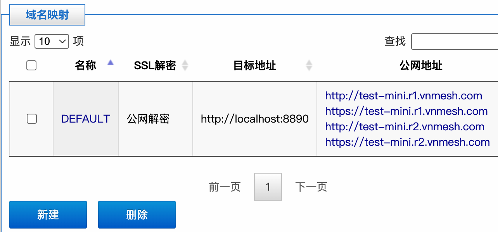
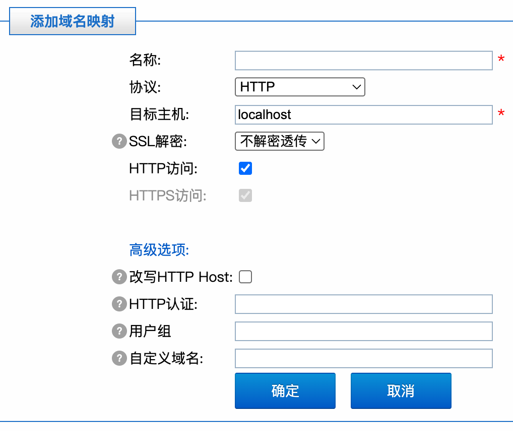

域名映射可以将一个公网域名映射到内网的HTTP或SSL服务。
配置路径: "公网服务-域名映射"。

点击"新建", 可以新建一个新的域名映射

说明:
| 名称 | 此域名映射规则的名称 |
| 协议 | 内网服务的协议, 包含: HTTP/HTTPS/Windwos远程桌面等 |
| 目标主机 | 内网服务的地址:端口, 例如example.lan:8080 |
| SSL解密 | 对于SSL, 可以选择三种解密方式: 不做解密: SSL加密数据从访问者端到端的传输到目标服务器(端到端加密) 公网解密: 在公网转发节点解密SSL, 然后再重新加密后传给目标服务器 本地解密: 在本地客户端解密SSL, 然后再传给给目标服务器 |
| HTTP访问 | 开启HTTP访问服务 |
| HTTPS访问 | 开启HTTPS访问服务 |
| 改写HTTP Host | 在本地客户端处, 将HTTP头中的Host字段改为目标主机名 |
| HTTP认证 | 用户可以为此资源设置用户名和密码, 格式为"user:password" |
| 用户组 | 用户可以选择此资源所属的用户组。允许用户组中的用户访问此资源。用户/用户组可到"用户管理-用户列表"配置 |
| 自定义域名 | 用户可以将资源绑定到自己的域名(需要进行域名所有权验证) |
配置视图： config-view -> xnetc-view
使用示例:
xnetc-view>public-service web rule test -p 8890 -D 1 -H -S
xnetc-view>show public-service web rule
Name:test,RandName:,HttpAuth:,Group:,Type:http,TargetHostname:localhost,TargetPort:8890,DecPos:1,SelfDomain:,HTTP:1,SSL:1,PermitSSL:1,Mstsc:0,Rewrite:0
xnetc-view>no public-service web rule test
命令说明:
| public-service web rule %NAME %OPTION | 配置一条web域名映射%NAME 规则名称, 例如: test 选项: -t --type String 配置协议 选项: -h --hostname String 配置目标主机 选项: -p --port U32 配置目标端口 选项: -D --decrypt-position U32 解密位置, 0:不做解密；1:公网解密；2:本地解密 选项: -H --HTTP 开启HTTP访问服务 选项: -S --SSL 开启HTTPS访问服务 选项: -R --rewrite 将HTTP头中的Host字段改为目标主机名 选项: -a --http-auth String 配置认证用户名:密码 选项: -g --group String 用户组 选项: -s --self-domain String 自定义域名 |
| show public-service web rule | 显示域名映射规则列表 |
| no public-service web rule %NAME | 删除名称为 %NAME 的域名映射规则 |
如果"HTTP认证"和"用户组"都未配置, 则此资源不会开启用户认证